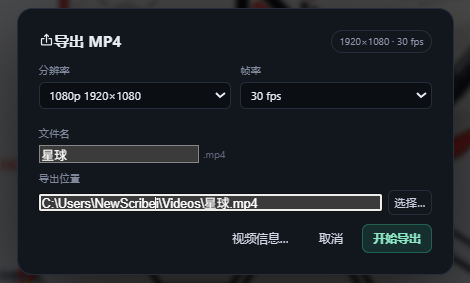

NewScribe 用户帮助
预览与导出
预览检查、导出设置、编码阶段、日志和失败排查。

18. 预览和导出#
预览#
点击“ 预览”或
预览”或 Ctrl+P。
预览会按时间轴播放完整动画，包括：
预览是检查动画是否正确的首选方式。
导出#
点击“ 导出视频”或
导出视频”或 Ctrl+E。
可设置：
- 分辨率：720p / 1080p / 2K / 4K / 自定义
- 帧率：24 / 25 / 30 / 50 / 60
- 文件名
- 导出位置
- 视频信息
导出阶段#
准备绘制数据
混合音频
渲染视频帧
编码器排空
封装 MP4
写入视频信息导出时间取决于视频长度、分辨率、元素数量、素材大小、蒙版数量和电脑性能。
导出日志#
导出失败时会在视频旁边生成：
<视频名>.mp4.export-log.txt失败界面会显示“查看导出日志”。
导出成功时默认会删除日志；勾选“保留导出日志”后会保留。
强制退出或失败时日志保留，方便排查。
导出前检查#
建议在导出前确认：
- 预览没有黑屏或缺失素材
- 所有素材都能正常显示
- 字体符合预期
- 视频时长和音频长度匹配
- 磁盘空间充足
- 输出分辨率适合目标平台
进一步说明：预览检查什么#
预览不是只看“有没有播放”，而是逐段检查。
先看整体节奏：元素是否出现得太密，镜头是否移动太频繁，片头是否太长。再看细节： 文字是否被裁切，蒙版是否盖住不该盖的内容，
文字是否被裁切，蒙版是否盖住不该盖的内容， 手势是否明显偏离笔迹，音频是否和画面对齐。
手势是否明显偏离笔迹，音频是否和画面对齐。
如果某个元素看起来“突然出现”，回到右侧检查它的出现方式、出现时长和“同时淡入”。如果某个元素“突然消失”，检查消失方式、消失时长和蒙版。
导出设置怎么选#
720p 适合快速检查、内部预览和移动端草稿。1080p 是大多数平台的通用选择。2K 和 4K 适合大屏展示、需要裁切的后期流程或高质量归档。
帧率方面，24/25/30 是常见选择。50/60 适合运动较多或需要更顺滑镜头的项目，但会增加编码压力和文件大小。不要盲目使用 60fps；如果内容主要是静态画面和缓慢镜头，30fps 通常足够。
自定义尺寸适合特定平台或客户要求。宽高比会直接影响构图，导出前先确认输出框中的内容不会被裁掉。
导出阶段为什么会停在不同位置#
“准备绘制数据”阶段可能在生成描绘路径。素材越复杂，准备越久。
“混合音频”阶段在解码和合并音轨。
“渲染视频帧”阶段会逐帧生成画面，这是最耗时的部分。
“编码器排空”阶段在等待视频编码器把排队的数据处理完。这里可能需要一段时间，进度条不一定会持续变化。
“封装 MP4”阶段把视频和音频写入容器，通常比渲染快。
“写入视频信息”阶段只在修改过元数据时执行。
导出日志怎么看#
日志会按时间记录阶段。你不需要看懂全部内容，只需要看最后几行是否还在更新。
如果日志停在“frame loop done”，说明帧已经渲染完，正在等待编码器排空。如果 flush waiting 后面的队列在下降，通常还在工作；如果长时间完全不变，可能已经卡住。
如果日志停在某个帧号，说明那一帧附近可能有问题。可以尝试降低分辨率、减少该时间段的元素或简化素材。
导出失败时的排查顺序#
先看错误信息，再看日志，再检查素材。
确认导出目录有写入权限，磁盘空间足够，目标文件没有被其他程序占用。如果使用网络盘或移动硬盘，先复制到本地再导出。
如果错误与字体有关，先换成本机已安装字体。如果错误与素材有关，检查素材是否损坏或路径是否失效。
导出成功后#
导出成功后，建议立即播放一次 MP4，确认：
- 画面没有黑屏或闪烁
- 音频没有缺失或错位
- 文字和
 二维码清晰
二维码清晰 - 文件大小和时长符合预期
- 视频信息正确
如果勾选了“保留导出日志”，日志会留在视频旁边；如果不勾选，点击“完成”后会删除日志。
为什么高分辨率不一定更好#
高分辨率会增加编码时间和文件大小，但如果原始素材本身很小，提升分辨率不会增加真实细节。
对于纯文字和矢量图形，高分辨率可以带来更清晰的边缘；对于低分辨率照片，高分辨率只会让模糊更明显。
选择分辨率时，先看最终播放设备和平台限制，再看素材本身的质量。